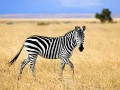
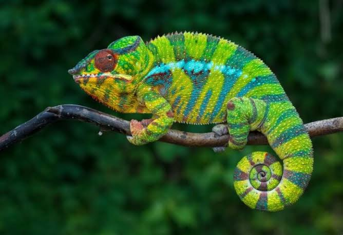

Selvatici


Volpe Rossa
Un incontro ravvicinato con uno dei Selvatici pi+� furbi e affascinanti del bosco.
Altre foto
Elefante Africano
Il gigante gentile delle savane africane, simbolo di saggezza e memoria.
Altre foto


Animali Domestici
Cane (Golden Retriever)
Il compagno di vita ideale: fedele, giocherellone e perfetto per le famiglie.
Altre foto


Uccelli


Martin Pescatore
Esplosione di colori vivaci in un piccolo e abilissimo pescatore fluviale.
Altre foto


Animali Marini

Tartaruga Marina
Un viaggio rilassante nelle profondit+� dell'oceano insieme a una creatura millenaria.
Altre foto
Squalo Bianco
La potenza pura del predatore oceanico per eccellenza nelle acque cristalline.
Altre foto


Pesce Pagliaccio
Il coloratissimo abitante delle barriere coralline, famoso del film Nemo.
Altre foto

Rettili


Iguana Verde
Un meraviglioso rettile esotico mentre si gode il calore del sole tropicale.
Altre foto


Drago di Komodo
Il piu grande lucertolone del mondo, predatore leggendario dell'Indonesia.
Altre foto
Zoo del Mondo
Scopri gli zoo e i parchi naturalistici in tutto il mondo. Clicca sulla mappa per esplorare!